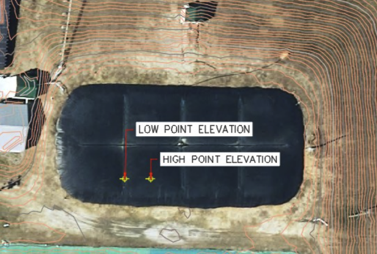

Biogas Volume Calculator
This biogas volume calculator calculates the volume of rectangular lagoon-style anaerobic digesters using the following equation:
V =IF(B7>2.8,(-0.00001382*B8^2)+(3.57457926*B8)-148273+B5, else (0.3323*B8-17508+B5)
- B1 = Length (user input)
- B2 = Width (user input)
- B3 = B1*B2 = Length * Width = Area
- B4 = Freeboard Height (user input)
- B5 = (B1*B2)*B4 = (Length*Width)*Freeboard Height = Freeboard Volume
- B7 = Cover Height (user input)
- B8 = B7*B3 = Cover Height * Area
The output is in cubic feet and also in cubic yards (cubic feet/27). This is the calculation sheet: Calculation Tool
These measurements can be gathered using the following procedure, which is also outlined extensively in this report: Senior Design Report
Below is an outline of the steps involved in gathering user input data:
- We utilized a handheld measuring device called Moasure, which utilizes bluetooth and an iPhone application to easily collect the necessary data for this method. After purchasing the Moasure, the application will guide the user through the setup and usage process.
- Depending on the fill level of the digester (0%, 25%, 75%, or 100%), users can input the length, width, freeboard height, and cover height into the biogas volume calculator.
- To determine the length and width of the digester, the perimeter of the digester can be taken.
- While the freeboard height is typically standardized at 1.5 feet for most digesters, some digesters may have varying freeboard heights.
- To determine the cover height, we measure the low point and high point elevations and take thee average. While these points may vary depending on the digester, we offer a reference example for standardized rectangular digesters. 